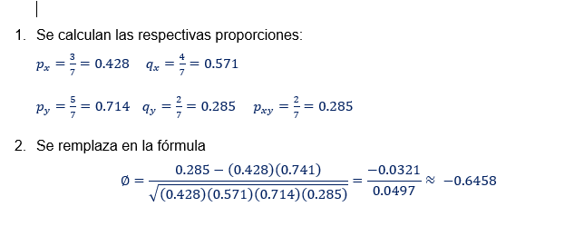
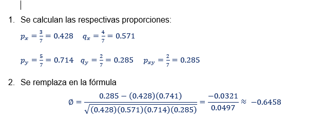

Bivariantes Dicotomicos

 

Descargar el código en C# de la clase y usuar el método "calc_phi_Mathews".
Más info. en Khanacademy

Para este calculo es necesario descagar la clase y usar el método "calc_odds_ratio".

Para este calculo es necesario descagar la clase y usar el método "calc_riesgo_relativo".